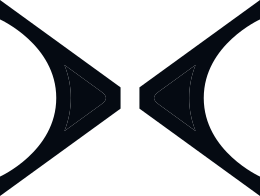
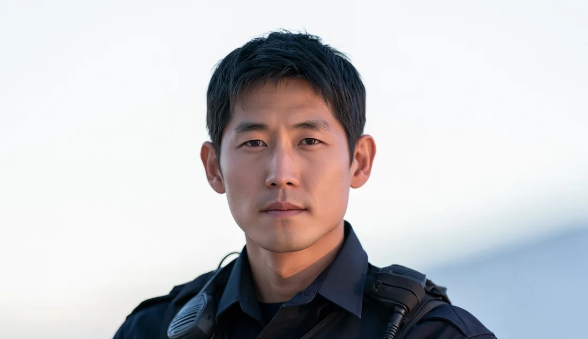
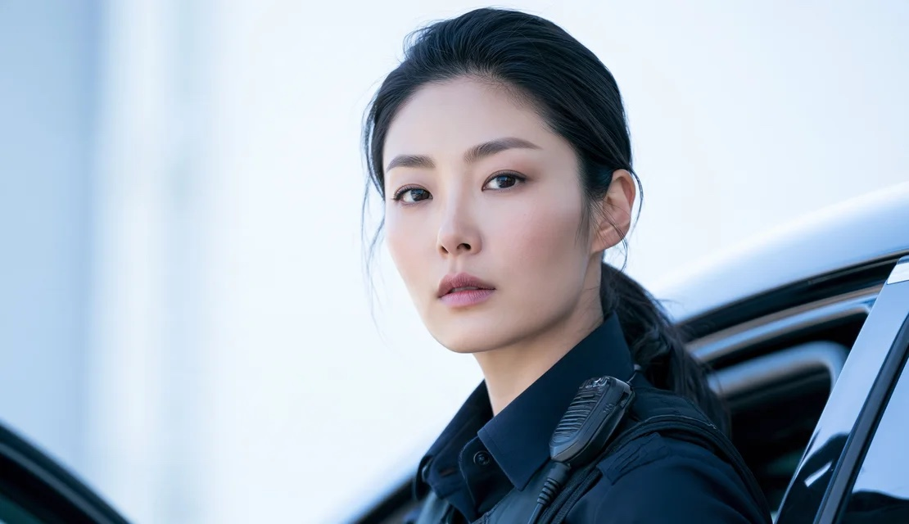
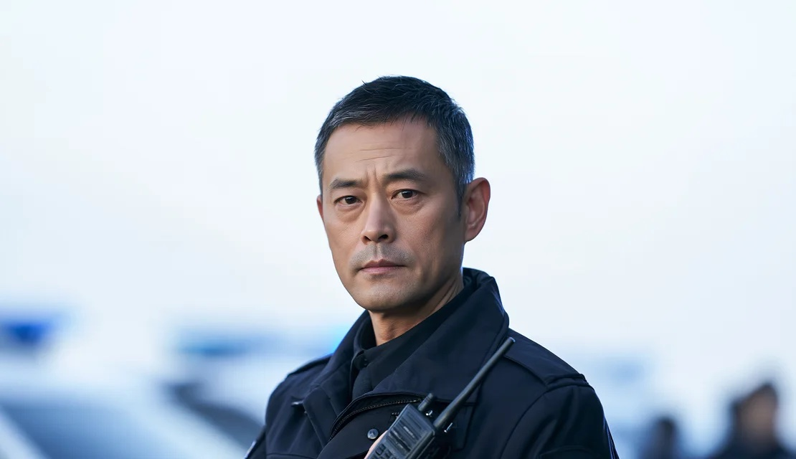
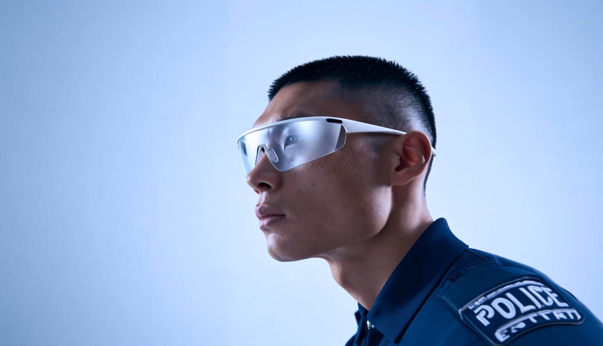

PARALLAX
사건의 모든 시선을, 하나의 흐름으로
Overview
현장 경찰은 사건의 흐름을 직접 보고 경험하지만, 지휘부와 후속 투입 인력은 전달받은 정보만으로 상황을 판단해야 합니다.
그러나 현장 정보는 여러 장비와 개인의 기억에 흩어져 있어 인력 간 상황 인식의 차이가 발생합니다. PARALLAX는 관련 인력 모두가 작전의 흐름과 상황을 쉽고 정확하게 이어받아, 각자의 자리에서 빠르게 대응할 수 있도록 연결하는 경찰 작전 지원 서비스입니다.
현장 경찰들은 장비 부담 없이작전 상황을 정확히 공유하고 있을까요?
여러 장비에 흩어진 정보 말로 다시 설명하는 상황 기억을 되짚어 남기는 기록
Interview
자료에서 발견한 어려움은실제 경찰관들도 똑같이 겪고 있었습니다.
작전 진행 속에서 어떤 불편을 겪고, 필요한 정보를 어떻게 확인하고 인계하는지 현장 경찰관에게 물었습니다.같은 사건이라도 다른 임무를 가진 네 사용자에게 누락 없는 사건 현장의 정보가 필요했습니다.
장비 사용
Q1. 장비를 쓰며 가장 불편한 점은 무엇인가요?

현장 대응 경찰관 김도현
필수 장비 3~4개만이라도 하나로 합쳐지면 편하겠어요.
복귀 후 보고
Q2. 현장 상황은 어떻게 보고서로 정리하나요?

후속 투입 경찰관 김하린
현장 내용을 기억했다가 복귀 후 전산에 작성해요.
현장 보완
Q3. 현장에서 법령・매뉴얼을 바로 찾기 쉬운가요?
현장 대응 경찰관 김도현
범위가 넓고 찾아보기 어려워서 개인 사진・메모를 같이 써요.
다음 인력 인계
Q4. 팀 교대나 후속 인력에게 어떻게 인계하나요?

현장 지휘관 박준호
중요한 내용은 구두로 전달합니다.
자주 쓰는 도구
Q5. 경찰 업무에서 자주 사용하시는 앱이나 매체가 있으신가요?
관제 분석 요원 최서윤
업무 중 법률이나 처음 마주하는 상황에서 헷갈리는 내용은 대부분 AI에게 물어봐요.
경찰관들은 낯선 상황이나 업무 정보가 필요할 때, AI에 질문하며 판단에 필요한 내용을 빠르게 보완하고 있습니다.다만 기록과 인계는 여전히 개인의 기억과 추가 작업에 의존하고 있습니다.
Problem & Solution
현장 대응부터 관제, 지휘, 후속 투입까지각자의 자리는 달라도 필요한 것은 모두 같았습니다.
인터뷰에서 확인한 어려움을 정보 확인, 기록, 인계, 업무 정보 탐색의 네 가지 부담으로 나눴습니다.PARALLAX는 각 과정에서 반복되는 작업을 줄이는 방향으로, 부담마다 해결할 기능을 하나씩 설계했습니다.
01
정보 확인의 부담
여러 장비와 화면을 오가며필요한 정보를 확인해야 합니다.
02
기록의 부담
현장에서 바로 남기지 못한 내용을복귀 후 기억을 되짚어 작성해야 합니다.
03
인계의 부담
교대·증원 때 상황을 다시 설명하고, 다음 인력은앞선 조치와 남은 업무를 다시 파악해야 합니다.
04
업무 정보 탐색의 어려움
법률이나 낯선 상황에서 필요한 정보를 찾기어려워, 개인 사진·메모나 AI 질문으로 보완합니다.
0104
PARALLAX바디캠·무전기로 나뉜 기능을AR 글래스 하나로 통합
PARALLAX매체와 서비스 기능을 통해사건을 손쉽게 기록
PARALLAX작전 중 남긴 자료와 대화를 정리해다음 인력에게 전달
PARALLAX서비스 내 AI로 작전 중필요한 정보를 빠르게 찾음
Device
기기가 바뀌어도 사건의정보는 하나로 연결됩니다.
사건 대응은 현장 기록부터 이동 중 확인, 지휘 판단까지 상황과 역할에 따라 요구되는 정보와 조작 방식이 달라집니다.PARALLAX는 공간과 역할에 맞는 매체를 통해 필요한 정보를 보고, 기록하고, 판단할 수 있도록 설계했습니다.
01
AR 글래스
경찰의 시선으로 현장 정보를 기록하고, 바디캠·무전기로나뉜 기능을 하나로 통합하기 위해 필요합니다.
02
폴더블 업무폰
휴대 가능한 넓은 화면으로 AR 글래스에서 기록한 내용을비교하고, 인계와 보고를 정리하기 위해 필요합니다.
03
차량용 대시보드
이동 중인 순찰차를 업무 공간으로 활용해, 도착 전 인계를 마치고바로 투입할 수 있도록 대응을 준비하기 위해 필요합니다.
04
지휘통제실 대시보드
여러 사건 현장의 정보를 한 눈에 확인하고 대응우선순위를 빠르게 판단하기 위해 필요합니다.

Core Value
매체와 페르소나 모두에게 공통적으로 중요한네 가지 핵심 가치를 도출했습니다.
01즉시성 02접근성 03연속성 04가시성


본 장면을 그 자리에서바로 남깁니다 필요한 기록을어디서든 꺼내 봅니다 사람이 바뀌어도사건이 이어집니다 누가 무엇을 하는지한눈에 봅니다